import pandas as pd
import numpy as np
#from sklearn.linear_model import LinearRegression
import matplotlib.pyplot as plt
import seaborn as sns
# 데이터 불러오기
train_df = pd.read_csv('../../../lsbigdata-project1/house price/houseprice-with-lonlat.csv')
train_df['Id'] = np.arange(len(train_df) )
test_df = pd.read_csv('../../../lsbigdata-project1/house price/test.csv')
submission = pd.read_csv('../../../lsbigdata-project1/house price/sample_submission.csv')
df = train_df[train_df['Neighborhood'] == 'North_Ames']데이터 불러오기
0. 모든 변수 결측치와 정보 확인
nan_df = train_df.isna().sum()
nan_df[nan_df>0]Mas_Vnr_Type 1775
Misc_Feature 2824
dtype: int64train_df.info()<class 'pandas.core.frame.DataFrame'>
RangeIndex: 2930 entries, 0 to 2929
Data columns (total 76 columns):
# Column Non-Null Count Dtype
--- ------ -------------- -----
0 Unnamed: 0 2930 non-null int64
1 MS_SubClass 2930 non-null object
2 MS_Zoning 2930 non-null object
3 Lot_Frontage 2930 non-null int64
4 Lot_Area 2930 non-null int64
5 Street 2930 non-null object
6 Alley 2930 non-null object
7 Lot_Shape 2930 non-null object
8 Land_Contour 2930 non-null object
9 Utilities 2930 non-null object
10 Lot_Config 2930 non-null object
11 Land_Slope 2930 non-null object
12 Neighborhood 2930 non-null object
13 Condition_1 2930 non-null object
14 Condition_2 2930 non-null object
15 Bldg_Type 2930 non-null object
16 House_Style 2930 non-null object
17 Overall_Cond 2930 non-null object
18 Year_Built 2930 non-null int64
19 Year_Remod_Add 2930 non-null int64
20 Roof_Style 2930 non-null object
21 Roof_Matl 2930 non-null object
22 Exterior_1st 2930 non-null object
23 Exterior_2nd 2930 non-null object
24 Mas_Vnr_Type 1155 non-null object
25 Mas_Vnr_Area 2930 non-null int64
26 Exter_Cond 2930 non-null object
27 Foundation 2930 non-null object
28 Bsmt_Cond 2930 non-null object
29 Bsmt_Exposure 2930 non-null object
30 BsmtFin_Type_1 2930 non-null object
31 BsmtFin_SF_1 2930 non-null int64
32 BsmtFin_Type_2 2930 non-null object
33 BsmtFin_SF_2 2930 non-null int64
34 Bsmt_Unf_SF 2930 non-null int64
35 Total_Bsmt_SF 2930 non-null int64
36 Heating 2930 non-null object
37 Heating_QC 2930 non-null object
38 Central_Air 2930 non-null object
39 Electrical 2930 non-null object
40 First_Flr_SF 2930 non-null int64
41 Second_Flr_SF 2930 non-null int64
42 Gr_Liv_Area 2930 non-null int64
43 Bsmt_Full_Bath 2930 non-null int64
44 Bsmt_Half_Bath 2930 non-null int64
45 Full_Bath 2930 non-null int64
46 Half_Bath 2930 non-null int64
47 Bedroom_AbvGr 2930 non-null int64
48 Kitchen_AbvGr 2930 non-null int64
49 TotRms_AbvGrd 2930 non-null int64
50 Functional 2930 non-null object
51 Fireplaces 2930 non-null int64
52 Garage_Type 2930 non-null object
53 Garage_Finish 2930 non-null object
54 Garage_Cars 2930 non-null int64
55 Garage_Area 2930 non-null int64
56 Garage_Cond 2930 non-null object
57 Paved_Drive 2930 non-null object
58 Wood_Deck_SF 2930 non-null int64
59 Open_Porch_SF 2930 non-null int64
60 Enclosed_Porch 2930 non-null int64
61 Three_season_porch 2930 non-null int64
62 Screen_Porch 2930 non-null int64
63 Pool_Area 2930 non-null int64
64 Pool_QC 2930 non-null object
65 Fence 2930 non-null object
66 Misc_Feature 106 non-null object
67 Misc_Val 2930 non-null int64
68 Mo_Sold 2930 non-null int64
69 Year_Sold 2930 non-null int64
70 Sale_Type 2930 non-null object
71 Sale_Condition 2930 non-null object
72 Sale_Price 2930 non-null int64
73 Longitude 2930 non-null float64
74 Latitude 2930 non-null float64
75 Id 2930 non-null int32
dtypes: float64(2), int32(1), int64(33), object(40)
memory usage: 1.7+ MB‘Id’ : 수치컬럼에서 제외해야 함.
‘MS_SubClass’ : 수치컬럼으로 되어있는데, 범주컬럼임.
‘Lot_Frontage’ : 259개 결측치는 집에 연결된 거리가 없어서 결측치인걸까? 그렇다면 0값으로 처리해주기.
‘Alley’ : 1369개 결측치는 골목길이 없다는 것임.
함수
# 1. 수치컬럼의 분포 확인 함수
def hist(df, numeric_col):
plt.clf()
plt.rcParams['font.family'] = 'Malgun Gothic'
plt.rcParams['axes.unicode_minus'] = False
a = numeric_col + "의 분포"
plt.title(a)
sns.histplot(df[numeric_col], stat='density')
plt.tight_layout()
plt.show()
# 2. 수치컬럼과 y컬럼의 관계 확인 함수
def rel_nx_ny(df, numeric_col, y):
plt.clf()
plt.rcParams['font.family'] = 'Malgun Gothic'
plt.rcParams['axes.unicode_minus'] = False
a = numeric_col + "과 "+ y+"컬럼의 관계"
plt.title(a)
sns.scatterplot(data=df, x=numeric_col, y=y)
plt.tight_layout()
plt.show()
# 3. 범주컬럼의 빈도 확인 함수 ( 수치변수 넣으면 이상하게 나옴, 범주변수로 변환한 뒤 넣어주기)
def cat_count(df, category_col, order):
plt.clf()
plt.rcParams['font.family'] = 'Malgun Gothic'
a = category_col + "의 범주별 빈도"
plt.title(a)
fig, ax = plt.subplots()
if order == 'value':
sns.countplot(df[category_col], order=df[category_col].value_counts().sort_values().index)
elif order == 'index':
sns.countplot(df[category_col], order=df[category_col].value_counts().sort_index().index)
for p in ax.patches:
plt.text(p.get_width(), p.get_y()+p.get_height()/2, int(p.get_width()))
plt.tight_layout()
#plt.figure(figsize=(5,5))
plt.show()
# 4. 코호트별 범주 컬럼의 빈도 확인 함수
def cats_count(df, category_col2 , category_col1): # category_col1 : x축, category_col2 : 코호트
plt.clf()
plt.rcParams['font.family'] = 'Malgun Gothic'
a = category_col1 + "의 범주별 " + category_col2 +"별 빈도"
plt.title(a)
fig, ax = plt.subplots()
sns.countplot(data=df, y=category_col1, hue=category_col2, order=df[category_col1].value_counts().sort_values().index)
for p in ax.patches:
plt.text(p.get_width()+10, p.get_y()+p.get_height()/2, int(p.get_width()), size=7)
plt.tight_layout()
plt.show()
# 5. 범주컬럼과 y컬럼 관계 비교 함수
def rel_cx_ny(df, category_col, y): # 여기서 category_col은 새로운 범주컬럼2 임.
cats = df[category_col].value_counts().sort_values(ascending=False).index
df2 = df.copy()
for i in range(len(cats)):
df2.loc[df2[category_col] == cats[i], 'category_col2'] = i
plt.clf()
plt.rcParams['font.family'] = 'Malgun Gothic'
a = category_col + "과 y컬럼의 관계"
plt.title(a)
plt.xticks(np.arange(len(cats)) , cats, rotation=90)
plt.xlabel(category_col)
sns.scatterplot(data=df2, x='category_col2', y=y)
plt.tight_layout()
#plt.figure(figsize=(100,3))
plt.show()
# 6. 코호트별로 범주컬럼과 y컬럼 관계 비교 함수
def rel_cat_cx_ny(df, category_col1, category_col2, y): # category_col1 : 코호트, category_col2 : x축 범주
cats = df[category_col2].value_counts().sort_values(ascending=False).index
df2 = df.copy()
for i in range(len(cats)):
df2.loc[df2[category_col2] == cats[i], 'category_col2'] = i
plt.clf()
plt.rcParams['font.family'] = 'Malgun Gothic'
a = category_col1 + "별로 " + category_col2 + "과 y컬럼의 관계"
plt.title(a)
plt.xticks(np.arange(len(cats)) , cats, rotation=90)
plt.xlabel(category_col2)
sns.scatterplot(data=df2, x='category_col2', y=y, hue= category_col1)
plt.tight_layout()
#plt.figure(figsize=(100,3))
plt.show()
# 7. 범주컬럼의 범주별 y컬럼 분포 비교 함수
def cat_hist(df, category_col, y):
plt.clf()
plt.rcParams['font.family'] = 'Malgun Gothic'
a = category_col + "의 범주별 분포 비교"
plt.title(a)
b = df[category_col].value_counts().sort_values()
cats = b[b>1].index
for i in range(len(cats)):
sns.histplot(df[df[category_col]==cats[i]][y], stat='density', label=cats[i])
plt.legend()
plt.tight_layout()
plt.show()
# 8. 코호트별로 x컬럼과 y컬럼의 관계 확인 함수 (겹치기)
def rel_cat_nx_ny1(df, category_col, numeric_col, y):
WxColourDB = ['black', 'red', 'chocolate','darkorange','darkgoldenrod','olive','plum','lightslategrey','forestgreen','gold','lightseagreen','fuchsia','deepskyblue','slateblue','mediumorchid','navy','hotpink','plum','lightsteelblue','blue','darkturquoise','cyan','green','yellow','darkkhaki','orange']
plt.clf()
plt.rcParams['font.family'] = 'Malgun Gothic'
plt.rcParams['axes.unicode_minus'] = False
a = category_col + " 범주별로 " + numeric_col + "와 Sale_Price 관계 비교"
plt.title(a)
cats = df[category_col].value_counts().sort_values(ascending=False).index
for i in range(len(cats)):
a = df[df[category_col]==cats[i]][[numeric_col,y]]
n = np.random.choice(np.arange(len(WxColourDB)),len(WxColourDB),replace=False)
n = n.tolist()[i]
sns.scatterplot(data=a, x=numeric_col, y=y, color=WxColourDB[n], label=cats[i]) # 색 달라져야함
plt.legend()
plt.tight_layout()
plt.show()
# 9. 코호트별로 x컬럼과 y컬럼의 관계 확인 함수 (각자)
def rel_cat_nx_ny2(df, category_col, numeric_col, y):
WxColourDB = ['black', 'red', 'chocolate','darkorange','darkgoldenrod','olive','plum','lightslategrey','forestgreen','gold','lightseagreen','fuchsia','deepskyblue','slateblue','mediumorchid','navy','hotpink','plum','lightsteelblue','blue','darkturquoise','cyan','green','khaki','darkkhaki','orange']
plt.clf()
plt.figure(figsize=(4,12))
plt.rcParams['font.family'] = 'Malgun Gothic'
plt.rcParams['axes.unicode_minus'] = False
a = category_col + " 범주별로 " + numeric_col + "와 Sale_Price 관계 비교"
plt.title(a, pad=20)
plt.axis('off')
cats = df[category_col].value_counts().sort_values(ascending=False).index
ax=[]
for i in range(len(cats)):
a = df[df[category_col]==cats[i]][[numeric_col,y]]
n = np.random.choice(np.arange(len(WxColourDB)),len(WxColourDB),replace=False)
n = n.tolist()[i]
ax.append(plt.subplot(int(round(len(cats)/2,0)), 2, i+1))
plt.xticks(visible=False)
plt.yticks(visible=False)
plt.subplot(int(round(len(cats)/2,0)), 2, i+1, sharex=ax[0], sharey=ax[0])
plt.scatter(a[numeric_col], a[y], color=WxColourDB[n], label=cats[i], s=2) # 색 달라져야함
#plt.legend()
plt.subplots_adjust(hspace=1, wspace=0.5)
plt.title(cats[i])
plt.ylabel(y)
plt.xlabel(numeric_col)
#plt.tight_layout()
plt.show()#train_df['Bedroom_AbvGr'] = train_df['Bedroom_AbvGr'].astype(str)
#train_df['Overall_Score'] = train_df['Overall_Score'].astype(str)
#cat_count(train_df, 'Bedroom_AbvGr')
#cat_count(train_df, 'Overall_Cond')
#cat_count(train_df, 'Overall_Score')#rel_cat_nx_ny(train_df,'MS_Zoning','Lot_Area' ,'Sale_Price')#rel_cat_nx_ny(train_df, 'MS_Zoning','Lot_Area' ,'Sale_Price')1. ‘Sale_Price’ : 판매 가격
hist(train_df, 'Sale_Price')
print("최소값 :", train_df['Sale_Price'].min())
print("최대값 :", train_df['Sale_Price'].max())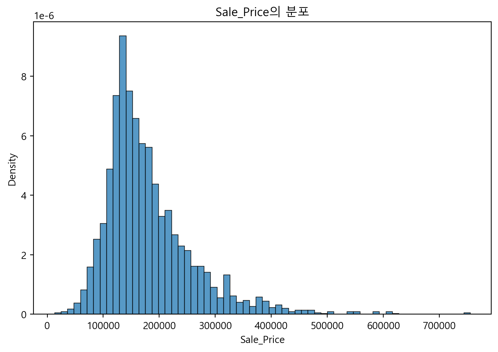
최소값 : 12789
최대값 : 755000이상치 있어보임. 100,000~200,000 달러가 제일 많아보임.
2. ‘MS_SubClass’ : 판매 관련 주택 타입 (1층인지, 2층인지, 언제적 집구조인지, 다세대인지 등등) <- 수치컬럼으로 되어 있지만 범주 컬럼임.
#cat_count(train_df, 'MS_SubClass')
#rel_cx_ny(train_df,'MS_SubClass', 'Sale_Price' )
#cat_hist(train_df, 'MS_SubClass', 'Sale_Price')'One_Story_1946_and_Newer_All_Styles' : 1946년부터 그 이후로 지어진 1층 짜리 최신 집 (1938, 1946~2010년에 지어진 집들임.)
'Two_Story_1946_and_Newer' : 1946년부터 그 이후로 지어진 2층 짜리 최신 집 (1946~2009에 지어진 집임)
'One_Story_PUD_1946_and_Newer' : 1946년부터 그 이후로 지어진 1층짜리 최신 연립주택 그룹 (집이 모여있음) 'One_and_Half_Story_Finished_All_Ages' : 2층짜리 집이지만, 삐족한 지붕때문에 2층의 절반은 없는 완성된 집
'Split_Foyer' : 현관 앞에 계단으로 층이 엇갈려있는 집
'Two_Story_PUD_1946_and_Newer' : 1946년부터 그 이후로 지어진 2층짜리 최신 연립주택 그룹 (집이 모여있음)
'Split_or_Multilevel' : 각 층이 엇갈려있는 집
'One_Story_1945_and_Older' : 1945년부터 그 이전으로 지어진 1층 짜리 오래된 집 (1885, 1910~1945, 1948에 지어진 집임.)
'Duplex_All_Styles_and_Ages' : 다세대 주택 (한 건물에 집이 나눠져 있고 여러 유닛이 삶)
'Two_Family_conversion_All_Styles_and_Ages' : 한 집을 두 집으로 개조해서 쪼갠 집
'One_and_Half_Story_Unfinished_All_Ages' : 2층짜리 집이지만, 삐족한 지붕때문에 2층의 절반은 없는 미완성 집
'Two_Story_1945_and_Older' : 1945년부터 그 이전으로 지어진 2층 짜리 오래된 집 (1872~1945에 지어진 집임)
'Two_and_Half_Story_All_Ages' : 3층짜리 집이지만, 삐족한 지붕때문에 3층의 절반은 없는 집
'One_Story_with_Finished_Attic_All_Ages' : 다락방이 있는 1층짜리 집 <- 데이터 4개밖에 없음 (1926,1930,1949,1979)
'PUD_Multilevel_Split_Level_Foyer' : 연립주택 그룹 + 각 층이 엇갈림 + 현관 계단 집
'One_and_Half_Story_PUD_All_Ages' : 2층짜리 집이지만, 삐족한 지붕때문에 2층의 절반은 없는 연립주택 그룹 (집이 모여있음)cols = train_df.columns
train_df[train_df['MS_SubClass'] == 20]['Year_Built'].sort_values() # 'MS_SubClass'=20은 1938, 1946~2010에 지어진 집임Series([], Name: Year_Built, dtype: int64)train_df[train_df['MS_SubClass'] == 30]['Year_Built'].sort_values() # 'MS_SubClass'=30은 1885, 1910~1945, 1948에 지어진 집임Series([], Name: Year_Built, dtype: int64)train_df[train_df['MS_SubClass'] == 60]['Year_Built'].sort_values() # 'MS_SubClass'=60은 1946~2009에 지어진 집임Series([], Name: Year_Built, dtype: int64)train_df[train_df['MS_SubClass'] == 70]['Year_Built'].sort_values() # 'MS_SubClass'=70은 1872~1945에 지어진 집임Series([], Name: Year_Built, dtype: int64)train_df[train_df['MS_SubClass'] == 120]['Year_Built'].sort_values() # 1976~2009에 지어진 집임.Series([], Name: Year_Built, dtype: int64)3. ‘MS_Zoning’ : 판매 관련 일반 구역 분류 (수상 거주지인지, 밀도가 높은 거주지인지 등)
#cat_count(train_df, 'MS_Zoning')
#rel_cx_ny(train_df,'MS_Zoning', 'Sale_Price' )
#cat_hist(train_df, 'MS_Zoning', 'Sale_Price')
#print(train_df['MS_Zoning'].value_counts()) A 농업
C 상업
I 산업
Floating_Village_Residential 수상 거주지
Residential_High_Density 높은 밀도 거주지
Residential_Medium_Density 중간 밀도 거주지
Residential_Low_Density 낮은 밀도 거주지
RP Residential Low Density Park
빈도를 확인해보면, 제일 많은게 RL(낮은 밀도 거주지)임.
범주별 분포를 보면, 범주마다 집값이 살짝 다른 것 같음. Residential_Low_Density 분포에 이상치도 존재하는 것 같다.
#cats_count(train_df, 'MS_Zoning', 'Neighborhood' )North_Ames에 밀도가 낮은 집들이 대부분이고, 밀도가 높은 집이 7개뿐임? 7개만 모여도 밀도가 높은거야?
train_df[train_df['Neighborhood']=='North_Ames']['MS_Zoning'].value_counts()MS_Zoning
Residential_Low_Density 436
Residential_High_Density 7
Name: count, dtype: int64#rel_cx_ny(train_df[train_df['Neighborhood']=='North_Ames'], 'MS_Zoning', 'Sale_Price')rel_cat_cx_ny(train_df,'MS_Zoning' ,'Neighborhood', 'Sale_Price')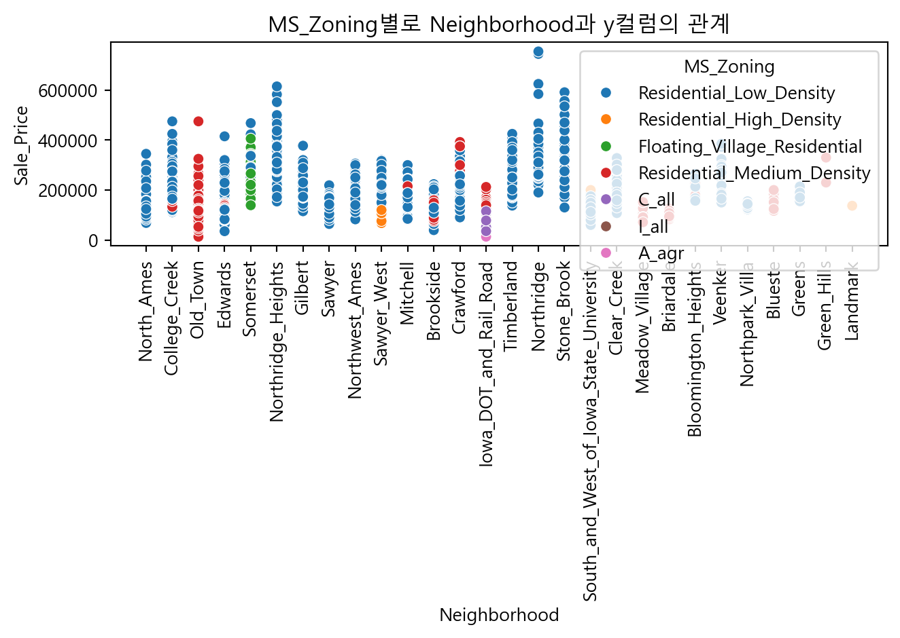
4. ‘Lot_Frontage’ : 집과 연결된 거리의 직선 길이 (feet)
hist(train_df, 'Lot_Frontage')
rel_nx_ny(train_df,'Lot_Frontage','Sale_Price' )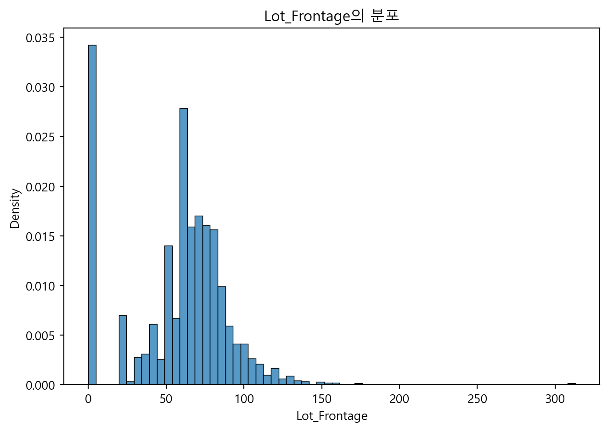
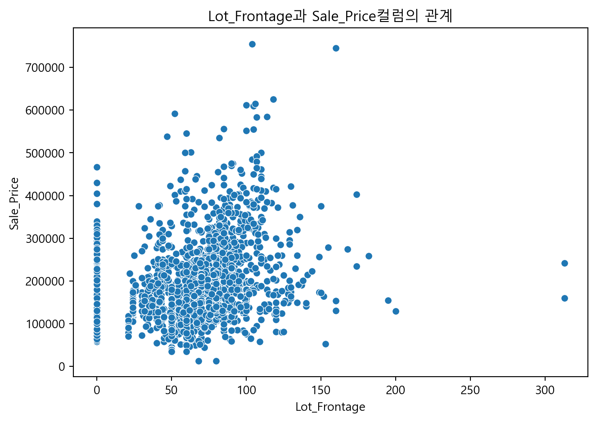
결측치 259개 있음. <- 집에 연결된 거리가 없어서 결측치인걸 수도 있음. 그렇다면 0값으로 처리해주기.
Lot_Frontage의 분포를 보면 이상치 있어보임. Lot_Frontage과 Sale_Price의 관계를 보면 많이 퍼져있기는한데 이상치를 제외하면 양의 관계가 있는 것 같기도 함.
#rel_cx_ny('Lot_Frontage', 'MS_Zoning') # 범주별로 y값과의 관계를 알아봄.plt.clf()
sns.scatterplot(data=train_df, x = 'Lot_Frontage', y='Sale_Price', hue='MS_Zoning')
plt.show()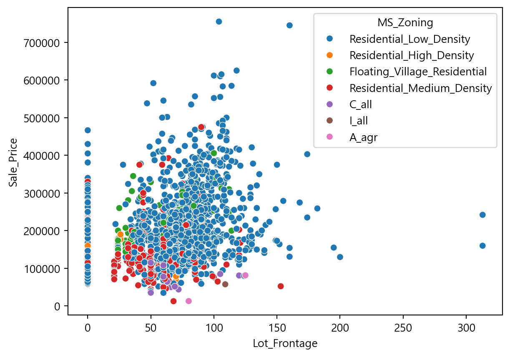
plt.clf()
sns.scatterplot(data=train_df, x = 'Lot_Frontage', y='Lot_Area', size='Sale_Price')
plt.show()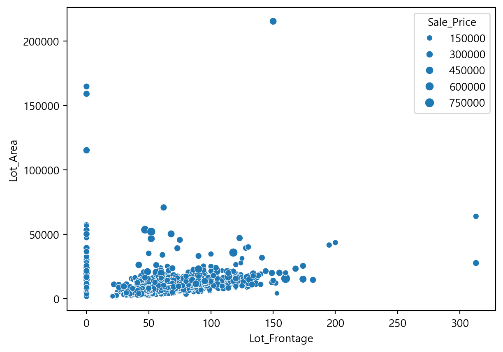
train_df['MS_SubClass'] = train_df['MS_SubClass'].astype(str)
plt.clf()
sns.scatterplot(data=train_df, x = 'MS_SubClass', y='Neighborhood', size='Sale_Price')
plt.show()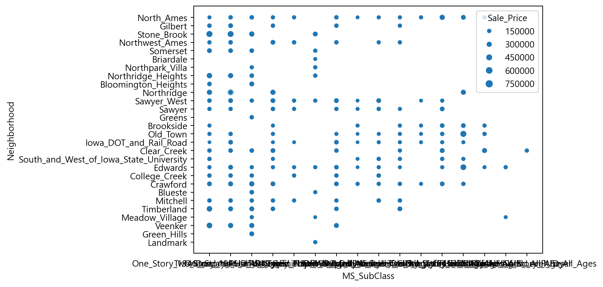
5. ‘Lot_Area’ : 부지 크기 (square feet)
hist(train_df, 'Lot_Area')
#rel_nx_ny(train_df, 'Lot_Area')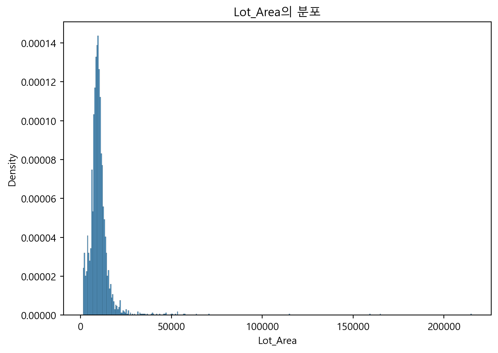
Lot_Area의 분포를 보면 이상치 있어보임. Lot_Area과 Sale_Price의 관계를 보면 일부의 집 때문에 굉장히 퍼지는 관계임.
#train_cat_rel_xy('Lot_Area', 'MS_Zoning') # 범주별로 y값과의 관계를 알아봄.6. ‘Street’ : 집에 접근 도로 유형 (자갈길인지, 포장길인지)
#cats_count(train_df, 'Street')
#train_cat_hist('Street')
print(train_df['Street'].value_counts())Street
Pave 2918
Grvl 12
Name: count, dtype: int64 Grvl 자갈길
Pave 포장길자갈길이 6개밖에 안됨. 범주별 분포를 보면, 포장길에 이상치가 있어보임.
7. ‘Alley’ : 집에 접근 골목 유형 (자갈 골목길인지, 포장 골목길인지)
#cats_count(train_df, 'Alley')
#train_cat_hist('Alley')
print(train_df['Alley'].value_counts())Alley
No_Alley_Access 2732
Gravel 120
Paved 78
Name: count, dtype: int64 Grvl 자갈 골목길
Pave 포장된 골목길
NA 골목길 없음1369 결측치 있음. <- 이게 다 골목길 없다는 것임. 범주별 분포가 많이 다름. <- 범주별로 집 가격 차이가 있을 것임.
8. ‘Lot_Shape’ : 일반적인 집 모양 (일반적인 모양인지, 일반적이지 않은 모양인지 등)
#cats_count(train_df, 'Lot_Shape')
#train_cat_hist('Lot_Shape')
print(train_df['Lot_Shape'].value_counts())Lot_Shape
Regular 1859
Slightly_Irregular 979
Moderately_Irregular 76
Irregular 16
Name: count, dtype: int64 Reg 보통
IR1 약간 보통이 아님
IR2 중간 정도 보통이 아님
IR3 보통이 아님일반적이지 않은 집이 10개 있음. 이상치에 해당하는 집일 수도…?
범주별 분포가 크게 다른 것 같진 않음. 근데 파란색분포는 살짝 다른 것 같음.
주황색 분포에 이상치가 있어보임.
9. ‘Land_Contour’ : 집의 평탄 정도
#cats_count(train_df, 'Land_Contour')
#train_cat_hist('Land_Contour')
print(train_df['Land_Contour'].value_counts())Land_Contour
Lvl 2633
HLS 120
Bnk 117
Low 60
Name: count, dtype: int64 Lvl 평평한 것에 가까움
Bnk 기움 - Quick and significant rise from street grade to building
HLS 비탈 - Significant slope from side to side
Low 움푹한 곳평평한 것에 가까운게 많음. 범주별 분포 차이가 없어 보임. 파란색 분포에 이상치가 있어보임.
10. ‘Utilities’ : 전기, 가스, 수도, 하수도 사용 가능 여부
#cats_count(train_df, 'Utilities')
plt.clf()
sns.histplot(train_df[train_df['Utilities']=='AllPub']['Sale_Price'], stat='density')
#sns.histplot(train_df[train_df['Utilities']=='NoSewr']['Sale_Price'], stat='density')
#sns.histplot(train_df[train_df['Utilities']=='NoSeWa']['Sale_Price'], stat='density')
#sns.histplot(train_df[train_df['Utilities']=='ELO']['Sale_Price'], stat='density')
plt.title('Utilities 범주별, Sale_Price 분포')
plt.tight_layout()
plt.show()
print(train_df['Utilities'].value_counts())Utilities
AllPub 2927
NoSewr 2
NoSeWa 1
Name: count, dtype: int64 AllPub 전기, 가스, 물, 하수도
NoSewr 전기, 가스, 물 (정화조)
NoSeWa 전기, 가스
ELO 전기전기, 가스만 사용가능한 집이 1개만 있고, 그 외에는 모두 사용 가능한 집임. 이상치 존재해 보임.
11. ‘Lot_Config’ : 부지 배열 (부지 위치가 안쪽인지, 코너인지, 도로가 몇 개인지 등)
#cats_count(train_df, 'Lot_Config')
#train_cat_hist('Lot_Config')
print(train_df['Lot_Config'].value_counts())Lot_Config
Inside 2140
Corner 511
CulDSac 180
FR2 85
FR3 14
Name: count, dtype: int64 Inside 안쪽 부지
Corner 코너 부지
CulDSac 출입하는 길이 하나인 곳
FR2 도로.강을 향한 면이 2곳
FR3 도로.강을 향한 면이 3곳범주별로 분포 차이가 없어보임. 초록색, 주황색 분포에 이상치가 있어보임.
12. ‘Land_Slope’ : 집 토지 경사 (경사가 약간인지, 심각한지 등)
#cats_count(train_df, 'Land_Slope')
#train_cat_hist('Land_Slope')
print(train_df['Land_Slope'].value_counts())Land_Slope
Gtl 2789
Mod 125
Sev 16
Name: count, dtype: int64 Gtl 약간 경사
Mod 보통 경사
Sev 심한 경사경사가 심하면 건축비용이 많이 든다길래 집값에 차이가 있을 줄 알았는데, 범주별로 분포의 차이가 없어보임. 파란색 분포에 이상치가 있어보임.
13. ‘Neighborhood’ : Physical locations within Ames city limits (집 위치)
#cats_count(train_df, 'Neighborhood')
#train_cat_hist('Neighborhood')
plt.clf()
sns.countplot(data=train_df, x='Neighborhood')
plt.xticks(rotation = 50)
plt.show()
b = train_df['Neighborhood'].unique()
plt.clf()
sns.histplot(train_df[train_df['Neighborhood']==b[0]]['Sale_Price'], stat='density')
sns.histplot(train_df[train_df['Neighborhood']==b[1]]['Sale_Price'], stat='density')
sns.histplot(train_df[train_df['Neighborhood']==b[2]]['Sale_Price'], stat='density')
sns.histplot(train_df[train_df['Neighborhood']==b[3]]['Sale_Price'], stat='density')
sns.histplot(train_df[train_df['Neighborhood']==b[4]]['Sale_Price'], stat='density')
sns.histplot(train_df[train_df['Neighborhood']==b[5]]['Sale_Price'], stat='density')
sns.histplot(train_df[train_df['Neighborhood']==b[6]]['Sale_Price'], stat='density')
sns.histplot(train_df[train_df['Neighborhood']==b[7]]['Sale_Price'], stat='density')
sns.histplot(train_df[train_df['Neighborhood']==b[8]]['Sale_Price'], stat='density')
sns.histplot(train_df[train_df['Neighborhood']==b[9]]['Sale_Price'], stat='density')
sns.histplot(train_df[train_df['Neighborhood']==b[10]]['Sale_Price'], stat='density')
sns.histplot(train_df[train_df['Neighborhood']==b[11]]['Sale_Price'], stat='density')
sns.histplot(train_df[train_df['Neighborhood']==b[12]]['Sale_Price'], stat='density')
sns.histplot(train_df[train_df['Neighborhood']==b[13]]['Sale_Price'], stat='density')
sns.histplot(train_df[train_df['Neighborhood']==b[14]]['Sale_Price'], stat='density')
plt.title('Neighborhood 범주별, Sale_Price 분포')
plt.show()
print(train_df['Neighborhood'].value_counts().sort_index())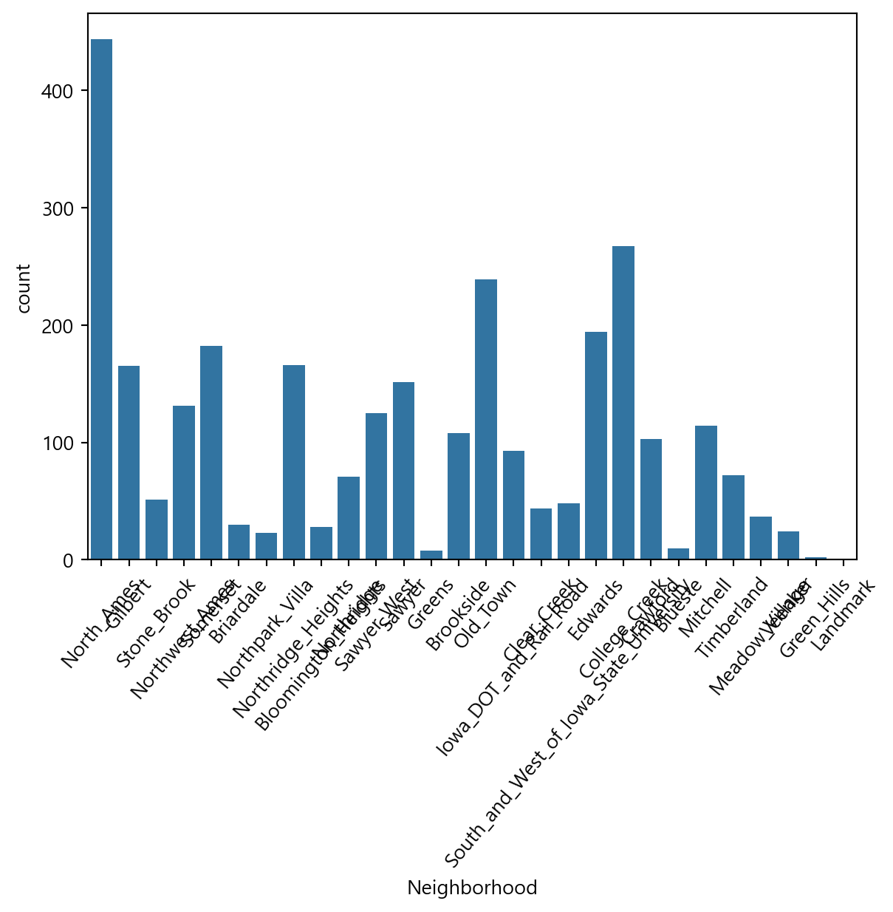
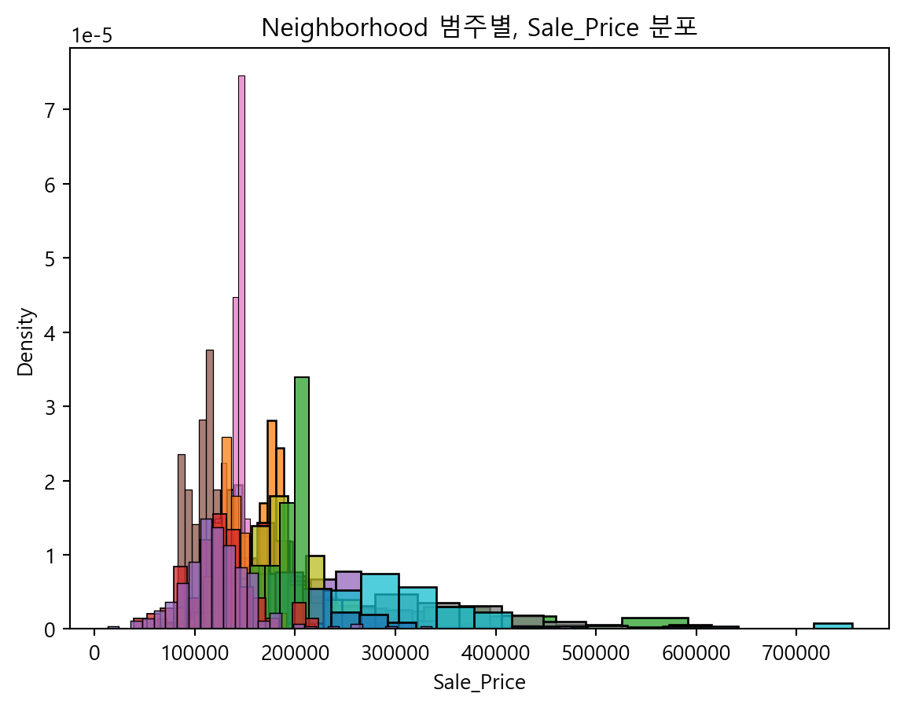
Neighborhood
Bloomington_Heights 28
Blueste 10
Briardale 30
Brookside 108
Clear_Creek 44
College_Creek 267
Crawford 103
Edwards 194
Gilbert 165
Green_Hills 2
Greens 8
Iowa_DOT_and_Rail_Road 93
Landmark 1
Meadow_Village 37
Mitchell 114
North_Ames 443
Northpark_Villa 23
Northridge 71
Northridge_Heights 166
Northwest_Ames 131
Old_Town 239
Sawyer 151
Sawyer_West 125
Somerset 182
South_and_West_of_Iowa_State_University 48
Stone_Brook 51
Timberland 72
Veenker 24
Name: count, dtype: int64 Blmngtn Bloomington Heights
Blueste Bluestem
BrDale Briardale
BrkSide Brookside
ClearCr Clear Creek
CollgCr College Creek
Crawfor Crawford
Edwards Edwards
Gilbert Gilbert
IDOTRR Iowa DOT and Rail Road
MeadowV Meadow Village
Mitchel Mitchell
Names North Ames
NoRidge Northridge
NPkVill Northpark Villa
NridgHt Northridge Heights
NWAmes Northwest Ames
OldTown Old Town
SWISU South & West of Iowa State University
Sawyer Sawyer
SawyerW Sawyer West
Somerst Somerset
StoneBr Stone Brook
Timber Timberland
Veenker Veenker분포 차이가 있는 지역이 있는 것 같음. <- 특정 지역은 집값의 차이가 있다고 볼 수 있음. 집값이 비슷한 지역끼리 묶어서 분석해볼 수도 있을 것 같음.
빨간색, 파란색 분포에서 이상치가 있어보임.
보라색, 하늘색, 주황색, 회색, 분홍색 지역은 특정 집값에 몰려있는 것 같음.
집 데이터가 가장 많은 지역은 NridgHt임. 그 다음이 CollgCr임.
plt.clf()
sns.histplot(train_df[train_df['Neighborhood']==b[0]]['Sale_Price'], stat='density')
sns.histplot(train_df[train_df['Neighborhood']==b[10]]['Sale_Price'], stat='density')
plt.title('Neighborhood 범주별, Sale_Price 분포')
plt.show()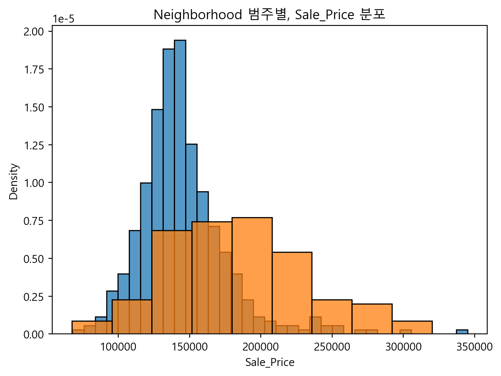
집 데이터가 가장 많은 두 지역을 보면 집값 차이가 큼
14. ‘Condition_1’ : 다양한 조건에 근접한지 (중요 도로에 근접한지, 공원에 근접한지, 평범한지 등)
#cats_count(train_df, 'Condition_1')
#train_cat_hist('Condition_1')
train_df['Condition_1'].value_counts()Condition_1
Norm 2522
Feedr 164
Artery 92
RRAn 50
PosN 39
RRAe 28
PosA 20
RRNn 9
RRNe 6
Name: count, dtype: int64 Artery 간선도로(도시의 주요지점 연결 도로 - 고속도로, 대로 등)에 인접
Feedr 2차 도로(고속도로에 들어가기 전 도로 - 보조 도로)에 인접
Norm 보통
RRNn North-South Railroad에서 200' 내에 있다.
RRAn North-South Railroad에 인접
PosN 공원, 그린벨트, 등등 off-site인 곳
PosA 공원, 그린벨트, 등등 off-site에 인접
RRNe East-West Railroad에서 200' 내에 있다.
RRAe East-West Railroad에 인접Norm이 압도적으로 많음. Feedr와 Artery가 다른 조건들보다는 많음.
pd.set_option('display.max_rows',None)
train_df.groupby(['Neighborhood','Condition_1']).agg(id_count=('Id','count'))| id_count | ||
|---|---|---|
| Neighborhood | Condition_1 | |
| Bloomington_Heights | Norm | 28 |
| Blueste | Norm | 10 |
| Briardale | Norm | 30 |
| Brookside | Artery | 1 |
| Feedr | 14 | |
| Norm | 78 | |
| PosN | 1 | |
| RRAn | 12 | |
| RRNn | 2 | |
| Clear_Creek | Feedr | 4 |
| Norm | 40 | |
| College_Creek | Feedr | 2 |
| Norm | 259 | |
| PosN | 6 | |
| Crawford | Artery | 1 |
| Feedr | 4 | |
| Norm | 95 | |
| PosA | 2 | |
| PosN | 1 | |
| Edwards | Artery | 7 |
| Feedr | 12 | |
| Norm | 174 | |
| PosN | 1 | |
| Gilbert | Feedr | 2 |
| Norm | 144 | |
| RRAn | 17 | |
| RRNn | 2 | |
| Green_Hills | Norm | 2 |
| Greens | Norm | 8 |
| Iowa_DOT_and_Rail_Road | Artery | 7 |
| Feedr | 6 | |
| Norm | 76 | |
| RRAe | 1 | |
| RRNe | 2 | |
| RRNn | 1 | |
| Landmark | Norm | 1 |
| Meadow_Village | Norm | 37 |
| Mitchell | Artery | 3 |
| Feedr | 2 | |
| Norm | 109 | |
| North_Ames | Artery | 29 |
| Feedr | 31 | |
| Norm | 369 | |
| PosA | 5 | |
| PosN | 8 | |
| RRAn | 1 | |
| Northpark_Villa | Norm | 23 |
| Northridge | Norm | 71 |
| Northridge_Heights | Norm | 161 |
| PosA | 1 | |
| PosN | 4 | |
| Northwest_Ames | Feedr | 8 |
| Norm | 92 | |
| PosA | 8 | |
| PosN | 12 | |
| RRAn | 10 | |
| RRNn | 1 | |
| Old_Town | Artery | 42 |
| Feedr | 11 | |
| Norm | 184 | |
| RRAn | 2 | |
| Sawyer | Feedr | 32 |
| Norm | 99 | |
| PosA | 2 | |
| PosN | 1 | |
| RRAe | 15 | |
| RRNe | 2 | |
| Sawyer_West | Feedr | 14 |
| Norm | 97 | |
| RRAe | 12 | |
| RRNe | 2 | |
| Somerset | Feedr | 9 |
| Norm | 159 | |
| PosN | 3 | |
| RRAn | 8 | |
| RRNn | 3 | |
| South_and_West_of_Iowa_State_University | Artery | 2 |
| Feedr | 9 | |
| Norm | 37 | |
| Stone_Brook | Norm | 48 |
| PosA | 1 | |
| PosN | 2 | |
| Timberland | Norm | 71 |
| PosA | 1 | |
| Veenker | Feedr | 4 |
| Norm | 20 |
pd.set_option('display.max_rows',None)
train_df.groupby(['Neighborhood','Bedroom_AbvGr']).agg(id_count=('Id','count'))| id_count | ||
|---|---|---|
| Neighborhood | Bedroom_AbvGr | |
| Bloomington_Heights | 1 | 3 |
| 2 | 25 | |
| Blueste | 1 | 2 |
| 2 | 7 | |
| 3 | 1 | |
| Briardale | 2 | 14 |
| 3 | 15 | |
| 4 | 1 | |
| Brookside | 1 | 6 |
| 2 | 39 | |
| 3 | 53 | |
| 4 | 9 | |
| 5 | 1 | |
| Clear_Creek | 0 | 2 |
| 1 | 5 | |
| 2 | 10 | |
| 3 | 14 | |
| 4 | 10 | |
| 5 | 3 | |
| College_Creek | 1 | 16 |
| 2 | 26 | |
| 3 | 211 | |
| 4 | 14 | |
| Crawford | 1 | 1 |
| 2 | 28 | |
| 3 | 50 | |
| 4 | 22 | |
| 5 | 2 | |
| Edwards | 1 | 4 |
| 2 | 61 | |
| 3 | 93 | |
| 4 | 30 | |
| 5 | 5 | |
| 6 | 1 | |
| Gilbert | 2 | 5 |
| 3 | 138 | |
| 4 | 21 | |
| 5 | 1 | |
| Green_Hills | 1 | 1 |
| 2 | 1 | |
| Greens | 1 | 8 |
| Iowa_DOT_and_Rail_Road | 1 | 7 |
| 2 | 37 | |
| 3 | 35 | |
| 4 | 12 | |
| 5 | 2 | |
| Landmark | 3 | 1 |
| Meadow_Village | 1 | 8 |
| 2 | 4 | |
| 3 | 22 | |
| 4 | 2 | |
| 5 | 1 | |
| Mitchell | 0 | 1 |
| 1 | 5 | |
| 2 | 33 | |
| 3 | 59 | |
| 4 | 13 | |
| 5 | 3 | |
| North_Ames | 1 | 3 |
| 2 | 117 | |
| 3 | 260 | |
| 4 | 50 | |
| 5 | 5 | |
| 6 | 8 | |
| Northpark_Villa | 2 | 11 |
| 3 | 11 | |
| 4 | 1 | |
| Northridge | 2 | 5 |
| 3 | 22 | |
| 4 | 43 | |
| 5 | 1 | |
| Northridge_Heights | 1 | 8 |
| 2 | 60 | |
| 3 | 69 | |
| 4 | 27 | |
| 5 | 2 | |
| Northwest_Ames | 2 | 10 |
| 3 | 80 | |
| 4 | 39 | |
| 5 | 2 | |
| Old_Town | 0 | 1 |
| 1 | 9 | |
| 2 | 85 | |
| 3 | 90 | |
| 4 | 40 | |
| 5 | 13 | |
| 6 | 1 | |
| Sawyer | 0 | 2 |
| 1 | 1 | |
| 2 | 27 | |
| 3 | 105 | |
| 4 | 13 | |
| 6 | 3 | |
| Sawyer_West | 1 | 3 |
| 2 | 24 | |
| 3 | 75 | |
| 4 | 17 | |
| 5 | 1 | |
| 6 | 5 | |
| Somerset | 1 | 9 |
| 2 | 59 | |
| 3 | 109 | |
| 4 | 5 | |
| South_and_West_of_Iowa_State_University | 1 | 1 |
| 2 | 9 | |
| 3 | 19 | |
| 4 | 12 | |
| 5 | 3 | |
| 6 | 3 | |
| 8 | 1 | |
| Stone_Brook | 0 | 1 |
| 1 | 8 | |
| 2 | 21 | |
| 3 | 9 | |
| 4 | 10 | |
| 5 | 2 | |
| Timberland | 2 | 19 |
| 3 | 44 | |
| 4 | 8 | |
| 5 | 1 | |
| Veenker | 0 | 1 |
| 1 | 4 | |
| 2 | 6 | |
| 3 | 12 | |
| 4 | 1 |